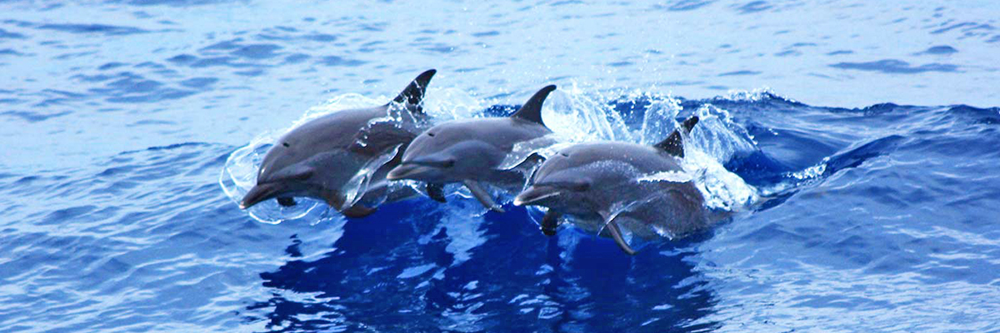
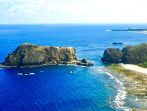
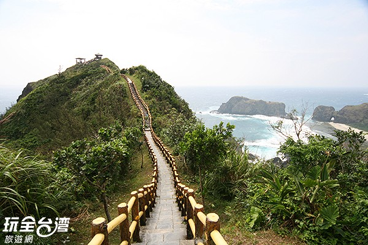

←第二站

→最後站

澎湖群島位於中國大陸與台灣島之間的臺灣海峽上，由90座大小不等
之島嶼組成。近年，因澎湖群島特殊的玄武岩地質景觀，國際地質專
家建議爭取列為世界遺產或設置為國家地質公園，引發國內地質學者
及文史工作者對澎湖群島64座島嶼、總面積126.864平方公里資料的
正確性提出質疑。上述資料係日治時期由日本政府於大正5年（1916
年）所測得。官方文獻紀錄及資料之引述，長久以來均以此為依據。
澎湖群島地勢為起伏平緩、山勢低矮的丘陵地，澎湖本島山勢最高
的拱北山也只有海拔52公尺高，澎湖外島最高的望安鄉大貓嶼則有
海拔79公尺。著名的有湖西鄉的拱北山、奎壁山以及西嶼鄉的牛心山。
在中華民國教科書上，一直沿用日治時期以來的資料，稱澎湖縣共有
64座島嶼；但在2005年12月，澎湖縣政府乃擬具『澎湖群島島嶼數量
委託清查計畫』委託國立高雄應用科技大學調查。調查結果顯示，澎
湖縣的島嶼共有90座，面積亦從126.8641平方公里增至141.0520平方
公里，增加了14.1879平方公里。位置位於北緯23°12至23°47，東經
119°19至119°43，島嶼數為90座。極東：查母嶼； 極西：花嶼； 極
南：七美嶼； 極北：大蹺嶼，北回歸線23°27穿過群島之中的虎井嶼
之南。不過至今內政部卻仍未審核通過，因此其隸屬的主計處仍舊維
持原資料。